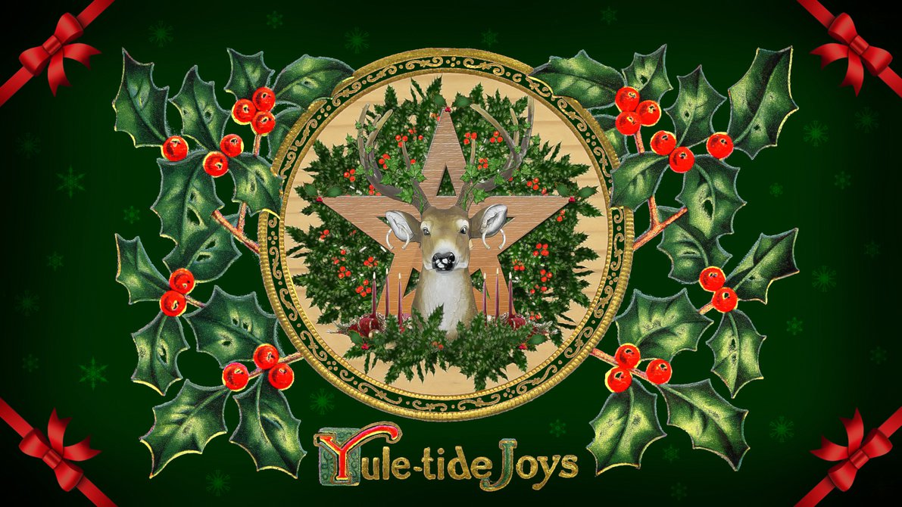
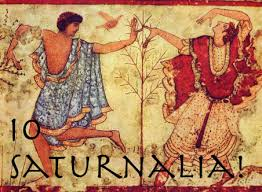

The History behind Christmas¶
Christmas is a worldwide recognized phenomenon. The holiday has been practiced in both religious and secular natures. More than likely if you are Christian or were raised in a Christian household, you have experienced the celebration of the Christmas season. More often than not the holiday is recognized by Christians as the birthday of Jesus of Nazareth, a highly influential and spiritual figure who basically taught the basis of the Christian religion. Some of the most popular traditions include giving gifts, decorating a Christmas tree, baking cookies, sharing meals with family, and attending church. Christmas Day, December 25th, has been a federal holiday in the U.S.A since 1870.
Christmas wasn’t always what it is today
(Image found on christmas.365greetings.com)
Christmas Decorations
For centuries before the arrival of Jesus, early Europeans celebrated the middle of the winter season. Many of them had great joy throughout the winter solstice.
(Image found on ueat.utoronto.ca)
Yule Holiday Symbol
Back in Scandinavia, the Norse celebrated a the winter solstice as well, but they named it Yule. This celebration went through December 21 all the way through January. They did this to show express their feelings of happiness at the return of the sun. A tradition often practiced is fathers and sons would hunt for and bring home very large logs to set on fire. While the log was ablaze, the people would feast. This event could last up to almost 12 whole days! They had the belief that each spark that emanated from the log represented new cattle that would be born in the coming year.
(Image found on hellenicfaith.com)
Saturnalia Poster
Back in Rome they had a holiday named Saturnalia. This was a celebration in honor of the god of agriculture, Saturn. The occurs during the winter solstice and continues for a whole month. This event was a hedonistic time. This means that food and drink were plentiful and the basic Roman caste system was turned upside down. For the entire month slaves were masters, and the lowly peasants controlled the city. Businesses and schools were all shut down so that everybody had the opportunity to enjoy the season.